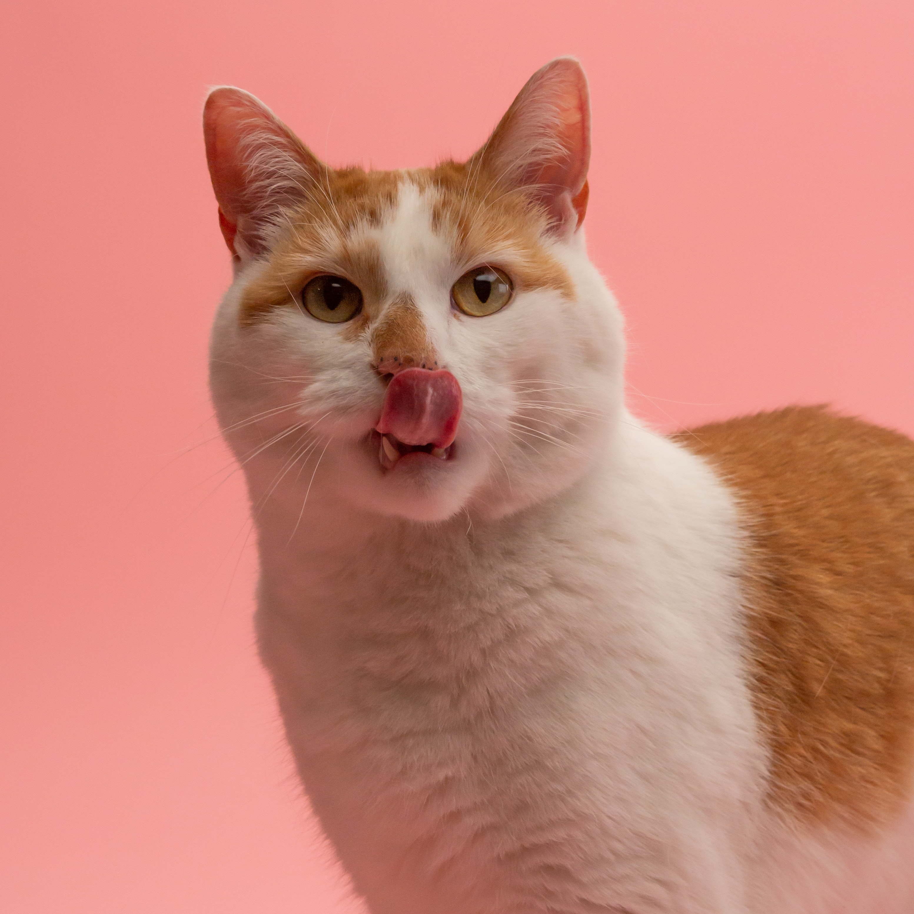

Fuzzy cats

The Ragdoll just might be the most laid-back kitty around! These fluffy enjoy nothing more than flopping at their owners' feet or on their laps.
Ragdolls are a fluffy cat breed known to steal the hearts of many because of their adorable looks and laidback personalities. They have plush, silky-soft fur and no undercoat, which means that despite having a lot of fur, it's easy to care for and less likely to get knotted or matted.
Pleaseand get the latest news and updates about the cats.
Asian
The Asian, also known as the Malayan, is a cat breed similar to the Burmese but in a range of different coat colors and patterns
The short-haired coat of the Asian is fine, satiny and glossy, and can be multiple colors and patterns. Asian Shorthairs are classified in four different varieties: the Asian Self (including the Bombay, which is a black Asian Self), the Asian Tabby, the Asian Smoke and the Burmilla (which is a shaded Asian).
Pleaseand get the latest news and updates about the cats.
Aphrodite Giant
cyprus cats, also known as cypriot cats, Saint Helen cats are a landrace of domestic cat found across the island of cyprus.
The earliest known written record of cats on Cyprus refers to a story of Saint Helen of Constantinople sending two boatloads of cats to a monastery on the island from Egypt or Palestine in the 4th century A.D. to deal with an infestation of snakes.
Pleaseand get the latest news and updates about the cats.
Abyssinian

The Abyssinian is a breed of domestic short-haired cat with a distinctive "ticked" tabby coat, in which individual hairs are banded with different colors.
The breed's distinctive appearance, seeming long, lean, and finely colored compared to other cats, has been analogized to that of human fashion models. Personality-wise, the cats traditionally display active, curious attitudes in which they frequently follow owners around and encourage play.Their dog-like characteristics also involve a particular sense of affection and desire for interaction. Abys have a distinctive wildcat look with their ticked coat and large erect ears.
Pleaseand get the latest news and updates about the cats.
Aegean
Aegean cats are a naturally occurring landrace of domestic cat originating from the Cycladic Islands of Greece and western Turke.
The Aegean cat, as its name suggests, originates from the Cycladic Islands in the Aegean Sea, where they occur as a natural landrace.Aegeans are considered one of the oldest domesticated cat breeds, cats having been introduced to the islands during the Bronze Age.They are common as feral cats in Greece and Turkey, where they are found amongst fishing ports asking for food offerings.
Pleaseand get the latest news and updates about the cats.
Bobtail

The American Bobtail is an uncommon breed of domestic cat which was developed in the late 19100s.
The Japanese Bobtail is a breed of domestic cat with an unusual bobtail more closely resembling the tail of a rabbit than that of other cats. The variety is native to Japan, though it is now found throughout the world. The breed has been known in Japan for centuries, and it frequently appears in traditional folklore and art.
Pleaseand get the latest news and updates about the cats.